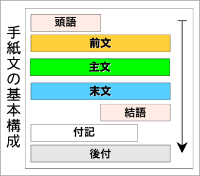
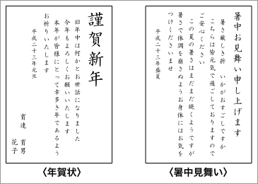
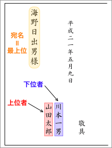
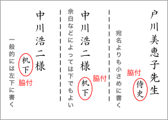
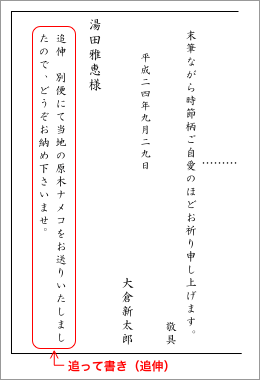
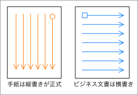

手紙の基本構成
手紙文は、大きく〔前文〕〔主文〕〔末文〕の３つの部分に分けることができる。これらに〔頭語〕〔結語〕〔付記〕〔後付〕を加えたものが手紙となる。したがって、手紙の基本構成は以下のようである。

以下に、日本語の手紙の基本的な構成について具体的に説明していく。
手紙文の基本構成
| 構成 | 例 |
| 1 | 頭語 | 拝啓、謹啓、前略〔→頭語〕 |
| 2 | 前文 | 時候の挨拶 | 初春の候、向夏の候、仲秋の候…〔→時候の挨拶〕 |
| 3 | 挨拶（安否確認、感謝） | 皆様にはますますご清祥のこととお慶び申し上げます。
日ごろはなにかとお世話になり、厚く御礼申し上げます。〔→挨拶〕 |
| 4 | 主文 | 起こしの言葉 | さて〔→起こしの言葉〕 |
| 5 | 本文 | 〔→本文〕 |
| 6 | 本題のまとめ | 御多忙のところ誠に恐れ入りますが、何卒ご高配賜りますよう、重ねてお願い申し上げます。〔→本題のまとめ〕 |
| 7 | 末文 | 結びの言葉 | 末筆ながら、時節柄ご自愛のほど祈り申し上げます。〔→結びの言葉〕 |
| 8 | 結語 | 敬具、草々、謹白〔→結語〕 |
| 9 | 付記 | 記 | ※事務的な手紙ではしばしば用いられる。〔→付記〕 |
| 10 | 箇条書き |
| 11 | 後付 | 日付 | 平成二十二年八月四日 |
| 12 | 差出人 | 鈴木 三郎 |
| 13 | 宛名 | 山田 太郎様 |
| 14 | 脇付 | 机下 |
| 15 | 追って書き | ※さらに付け加える内容がある場合に書く。〔→追って書き〕 |
頭語
以下、手紙の種類に応じた頭語の例を示す。赤色の網（＿＿）で示したものが最も一般的に用いられる頭語である。また、日本語の手紙文では、使うべき表現に男女の差があるので、女性が使うべきものには「（女性専用）」と注記している。
さまざまな頭語があるが、基本的には『拝啓』『謹啓』『前略』の３つを使い分ければよい。
- 一般的な手紙
- 拝啓、啓上、拝呈、一筆啓上、一筆申し上げます（女性専用）
- ていねいな手紙（目上の人への手紙）
- 謹啓、粛啓、謹呈、謹んで申し上げます（女性専用）
- 親しい友人への手紙
- 拝啓、啓、［なし］
- 略式の手紙（事務的なもの、葉書など）
- 前略、冠省、略啓、前略ごめんください（女性専用）、前文お許しください（女性専用）、［なし］
- 返事として出す手紙
- 拝復、復啓、お手紙（うれしく／なつかしく…）拝見いたしました（女性専用）、ご返事申し上げます（女性専用）
- 返事として出すていねいな手紙
- 謹復、謹答、拝復、ご書面謹んで拝見いたしました、お手紙謹んで拝見いたしました（女性専用）、謹んでご返事申し上げます（女性専用）
- 急ぎの手紙
- 急啓、急呈、急白、とり急ぎ申し上げます（女性専用）、［なし］
また、頭語は結語と対で用いられる。頭語と結語のレベルをあわせるようにする。〔→結語〕
略式の手紙の頭語を用いた場合
略式の手紙の頭語は、「前略」→『前文を省略します』、「冠省」→『はじめに冠すべき挨拶を省略します』の意味である。
略式の手紙の頭語を用いた場合は、前文を省略して、すぐに本文を続けるようにする。「前略」と書いた後に時候の挨拶を書いたりしてはいけない。
頭語を省略する場合
年賀状や暑中見舞い、寒中見舞いなどの季節ごとの儀礼的な挨拶状では、頭語と結語は用いないのが基本である。

また、緊急の知らせなど急ぎの手紙の場合は、頭語を省略してもよい。ほかにも、お見舞いやお詫び（詫び状）など、急いで出すべき手紙の場合にも頭語を省略することがある（あるいは、「前略」「冠省」などの略式の統語を用いる）。なお、お悔やみ状（亡くなった人の親族に出す手紙）の場合には、頭語と前文をすべて省略して、すぐに本文から書くのがルールである。
時候の挨拶
時候の挨拶とは、季節ごとの気候（暑い、寒い、晴、雨など）に関する挨拶のことである。
時候の挨拶には、様々な表現や語句がある。以下に、月ごとの例を挙げておく（＊は、軟らかい表現であることを示す）。
慣用的な時候の挨拶
| １月（睦月）の慣用表現 |
初春の候／新春の候／厳冬の候／厳寒の候／頌春の候
寒さ厳しき折から／寒気ことのほか厳しき折／*新春とは申しながらまだまだ厳しい寒さが続きます／*例年にない寒さが続く今日この頃 |
| ２月（如月）の慣用表現 |
立春の候／春寒の候／余寒の候／残雪の候／梅鴬の候
余寒なお厳しき折から／暦の上には春は立ちながら／*立春とは名ばかりの寒い日が続きます／*梅のつぼみもふくらみかけてまいりました |
| ３月（弥生）の慣用表現 |
早春の候／春分の候／浅春の候／軽暖の候／仰梅の候
三寒四温と申します／*寒さもゆるみ日ましに春めいてまいりました／*やわらかな日差しが春のおとずれを告げるころとなりました／*春まだ寒い今日この頃 |
| ４月（卯月）の慣用表現 |
春暖の候／陽春の候／仲春の候／春和の候／桜花の候
春たけなわの今日この頃／春光うららかな季節を迎えました／*桜の花もすっかり咲きそろいました／*桜花匂う今日この頃 |
| ５月（皐月）の慣用表現 |
新緑の候／薫風の候／立夏の候／晩春の候／新茶の候
新緑目にしみる今日この頃／風薫る五月／*風薫るさわやかな季節となりました／*若葉の薫るころとなりました |
| ６月（水無月）の慣用表現 |
向夏の候／入梅の候／梅雨の候／初夏の候／長雨の候
向暑の折から／暑さ日増しに厳しき折／*うっとうしい季節になりました／*木々の緑もようやく深くなりました／*梅雨明けの待たれる今日この頃 |
| ７月（文月）の慣用表現 |
盛夏の候／酷暑の候／猛暑の候／炎暑の候／酷夏の候
暑さ厳しき折から／炎暑堪え難きこの頃／*急に暑さが加わってまいりましたが／*うっとうしかった梅雨も明け空の青さがまぶしい季節となりました／*近年にない暑さの続く今日この頃 |
| ８月（葉月）の慣用表現 |
残暑の候／晩夏の候／立秋の候／晩暑の候／秋暑の候
残暑なお厳しき折から／残暑凌ぎ難きこの頃／*立秋とは名ばかりの暑さが続きます／*朝夕にはかすかに秋の気配を感じます／*涼しい季節の待ち遠しい今日この頃 |
| ９月（長月）の慣用表現 |
初秋の候／新秋の候／秋冷の候／新涼の候／名月の候
爽やかな季節を迎えました／*しのぎやすい季節となりました／*朝夕も日毎に涼しくなります／*暑さ寒さも彼岸までと申します |
| 10月（神無月）の慣用表現 |
仲秋の候／秋涼の候／紅葉の候／錦秋の候／朝寒の候
天高く馬肥ゆる秋／*さわやかな秋となりました／*紅葉の美しい季節となりました／*実りの秋を迎えました／*木の葉も色づき秋の深まりを感じる今日この頃／*さわやかな秋晴れの続く今日この頃 |
| 11月（霜月）の慣用表現 |
晩秋の候／向寒の候／涼冷の候／夜寒の候／落葉の候
小春日和の今日この頃／夜寒の折から／*朝夕の寒気が身にしみるころとなりました／*めっきり寒さも増してまいりました／*枯葉の舞い散る季節となりました |
| 12月（師走）の慣用表現 |
初冬の候／師走の候／寒冷の候／冬至の候／初氷の候
歳末ご多用の折から／*年の瀬を迎え何かとお忙しいことと思います／*寒さも日毎に増す今日この頃 |
「〜の候」の形は、漢語を使った硬い表現なので、主に男性が用いるものである。また、公式の文書（ビジネス文書）では、一般的に「〜の候」の形を使う。女性が書く場合や親しい人への手紙では、「〜季節となりました」のような軟らかい表現のものを使うとよい。
挨拶
時候の挨拶に続けて、挨拶のことばを書く。挨拶のことばでは、『安否の挨拶』と『感謝のことば』の一方または両方を書くのが一般的である。ただし、親しい相手に出す手紙ならば、安否の挨拶や感謝のことばは省略しても構わない。
なお、見舞い状やお悔やみ状では、相手が元気でめでたいわけはないので、安否の挨拶はしないのがルールである。
安否の挨拶
安否の挨拶は、
- 涼冷の候、皆様にはますますご清祥のこととお慶び申し上げます。
- さわやかな秋となりましたが、皆様いかがお過ごしでしょうか。
のように、時候の挨拶と同じ文の中で書く書き方と、
- 枯葉の舞い散る季節となりました。皆様お変わりございませんか。
のように文を分けて書く書き方とがある。
安否の挨拶の例を以下にあげておく。
- 皆様にはますますご健勝のことと存じます。
- 皆様におかれましてはますますご清祥のこととお喜び申し上げます。
- ご家族の皆様にもお元気でお過ごしのことと拝察申し上げます。
- 貴下、ますますご清適の段、大慶に存じます。
- 先生におかれましては、ますますご壮健にてご活躍のこととお慶び申し上げます。［ていねい］
- 皆々様におかれましては愈々ご清栄の由、慶賀の至りに存じます。［非常にていねい］
※「皆様」「皆々様」は相手とその家族を指す。「貴下」は『あなた』の意味で、同等の相手に使う。「〜におかれましては」は「〜には」よりていねいである。また、「お慶び」は「お喜び」よりていねいである。
- 皆様にはお元気でお過ごしのことと存じます。［やや軽い］
- 皆様お変わりなくお過ごしのことと思います。［やや軽い］
- 皆様いかがお過ごしでしょうか。［軽い］
- その後お変わりございませんか。［軽い］
- お元気でお過ごしでしょうか。［軽い］
- いかがお過ごしですか。［かなり軽い］
- お元気ですか。［かなり軽い］
※［軽い］、［やや軽い］、［かなり軽い］は、略式の表現、あるいは軟らかい表現であることを示す。親しい相手への手紙や女性が用いるものである。［ていねい］、［非常にていねい］は、格式張った表現、あるいは硬い表現であることを示す。目上の人への手紙や男性が用いるものである。
私的な手紙では、相手（の側）の安否について書いた後に、「わたくしどもも相変わらず元気で過ごしております。」のように自分（の側）の無事を書くことがある。ただし、私的でない手紙（事務的な文書や団体宛の手紙、複数宛に出すあいさつ状や招待状）では、自分（の側）の無事は書かないのがふつうである。
自分（の側）の無事は書く表現には次のようなものがある。
- 私事ではございますが、おかげさまで家族一同元気で過ごしております。
- 当方もおかげさまで皆無事に暮らしておりますので、どうぞご安心ください。
- わたくしも相変わらず健康な毎日を過ごしておりますので、何卒ご放念くださいませ。［ていねい］
- なお、わたくしどももおかげさまで壮健に過ごしておりますので、他事ながらご休心くださいませ。［ていねい］
- こちらは皆、つつがなく暮らしております。［やや軽い］
- 私どもも相変わらず元気に過ごしております。［やや軽い］
- 当方も幸い家族一同無事に暮らしております。［やや軽い］
- 私も相変わらず元気にしております。［軽い］
- こちらも元気で働いております。［軽い］
※［軽い］、［やや軽い］、［かなり軽い］は、略式の表現、あるいは軟らかい表現であることを示す。親しい相手への手紙や女性が用いるものである。［ていねい］、［非常にていねい］は、格式張った表現、あるいは硬い表現であることを示す。目上の人への手紙や男性が用いるものである。
感謝のことば
安否の挨拶に続けて感謝のことばを述べる。なお、親しい相手への手紙などでは、感謝のことば感謝のことばは省略しても構わない。
感謝のことばには、次のようなものがある。
- いつも何かとお世話になりまして、誠にありがとうございます。
- 日ごろはなにかとお世話になり、厚く御礼申し上げます。
- 日ごろは種々のご配慮をいただき、深く感謝いたしております。
- つねづねひとかたならぬご高配を賜りまして、深謝申し上げます。［ていねい］
- 平素は格別のご厚情を賜り、誠にありがたく心より御礼申し上げます。［ていねい］
※［軽い］、［やや軽い］、［かなり軽い］は、略式の表現、あるいは軟らかい表現であることを示す。親しい相手への手紙や女性が用いるものである。［ていねい］、［非常にていねい］は、格式張った表現、あるいは硬い表現であることを示す。目上の人への手紙や男性が用いるものである。
特定の事柄への感謝を述べる
最近、特に礼を述べるようなことがあったときには、そのことについての感謝の気持ちを述べるとよい。具体的な事柄について感謝の気持ちを述べる表現には次のようなものがある。
- 先日は突然伺いましたにもかかわらず、ひとかたならぬお世話をいただき感謝の言葉もございません。
- 過日はご多用中にもかかわらず格別のご高配を賜り衷心より感謝申し上げます。［ていねい］
※［軽い］、［やや軽い］、［かなり軽い］は、略式の表現、あるいは軟らかい表現であることを示す。親しい相手への手紙や女性が用いるものである。［ていねい］、［非常にていねい］は、格式張った表現、あるいは硬い表現であることを示す。目上の人への手紙や男性が用いるものである。
無沙汰を詫びる
長く連絡をとっていなかった相手に手紙を出すときには、無沙汰（長い間連絡したなかったこと）を詫びることばを書くとよい。
無沙汰を詫びる表現には次のようなものがある。
- 平素はご無沙汰いたしておりましてまことに申しわけございません。
- 日ごろはご無沙汰ばかりで恐縮いたしております。
- その後ご無沙汰を重ねまして、申しわけございません。
- 日ごろのご無沙汰、平にご容赦くださいませ。
- 久しくご無沙汰いたしまして、心よりお詫び申しあげます。
- 雑事に紛れご無沙汰いたしまして、まことに申しわけなく存じます。
- 長らくご無音いたしましたこと、なにとぞご容赦くださいませ。
※［軽い］、［やや軽い］、［かなり軽い］は、略式の表現、あるいは軟らかい表現であることを示す。親しい相手への手紙や女性が用いるものである。［ていねい］、［非常にていねい］は、格式張った表現、あるいは硬い表現であることを示す。目上の人への手紙や男性が用いるものである。
起こしの言葉
本文（主文）を切り出すために使う語を「起こしの言葉」（または起辞）という。「さて」「ところで」「この度は（〜があり、お手紙いたしました。／〜の件でお手紙差しあげました）」「早速ですが」「他でもございませんが」「誠に恐縮ですが」など、さまざまなものがあるが、一般的には「さて」と書けばよい。
本文
本文には、用件を書く。本文の文章のスタイルは、次のようにすればよいだろう。
- 目上の人への手紙
- 手紙文の基本構成を厳格に守り、敬語を使ってていねいに書く。誤字や脱字もないように注意する
- 儀礼的な手紙
- 文例集などを参考にして、慣例にしたがって書く
- 親しい人への手紙
- 『です・ます体』で書けばよい。特別な敬語は不要で、口語表現などのくだけた表現があってもよい。ただし、手紙文の基本構成は守った方がよい
- 事務的な手紙
- 手紙文の基本構成を守り、簡潔にわかりやすく書く。文章はていねいに書くが、過剰な敬語を使う必要はない
本題のまとめ
主文の末尾では、本題のまとめとして具体的な用件を依頼する文を書くことが多い。
本題のまとめは必須ではないが、本題のまとめとして具体的な用件を依頼する文には、つぎのようなものがある。
- ご多忙とは存じますが、万障お繰り合わせの上ご臨席賜りたくお願い申し上げます。［※案内状や招待状で出席を依頼する］
- ご多用中のところ誠に恐縮に存じますが、何卒ご臨席賜りますようお願い申し上げます。［※案内状や招待状で出席を依頼する］
- 御多忙のところ誠に恐れ入りますが、何卒ご高配賜りますよう、重ねてお願い申し上げます。［※依頼状などで最後に改めてお願いする］
- なお、心ばかりの品を別便にてお送りいたしましたので、ご笑納いただければ幸甚に存じます。［※贈物の添え状で受け取りを頼む］
- お近くまでお越しの際には、どうぞお立ち寄りくださいますようお待ち申しております。［※転居の挨拶状で訪問を頼む］
用件をさらに他の人にも伝言するよう依頼する
主文の末尾で、具体的な用件を家族の人などに伝言するよう依頼する場合がある。
用件をさらに他の人に伝言するよう依頼する表現には次のようなものがある。
- この旨、［お父様］にもご伝言ください。
- ［どうかお越しくださいます］よう［ご両親様］にもお伝えくださいませ。
※［＿＿］には、伝言を伝えてもらう相手、具体的な伝言の内容が入る。
結びの言葉
本文が終わったら、結びの言葉を述べる。
結びの言葉には、以下のような種類のものがある。
結びの言葉は、主文とのバランスで長くなり過ぎないようにする必要がある。そのためには、上記のうち１つか２つを書けばよいであろう。
以下、それぞれについて具体的な表現の例を見ていく。
相手の健康や幸福を祈る言葉
相手の健康や幸福を祈る言葉は、個人宛の手紙の結びとして最も一般的なものである。
相手の健康や幸福を祈る言葉には次のようなものがある。
- 体調を崩されませぬようご留意ください。［やや軽い］
- 時節柄、ご健康にはお気をつけくださいませ。［やや軽い］
- 末筆ながら、時節柄ご自愛のほど祈り申し上げます。
- 末筆ながら、ご自愛専一のほどお祈り申し上げます。
- 風邪など召されませぬようくれぐれもご自愛ください。
- 寒さ厳しき折、お身体にはくれぐれもお気をつけくださいませ。
- 時節柄、くれぐれもご自愛くださいますようお祈り申し上げます。
- 末筆ながら皆々様のより一層のご健康とご多幸を心よりお祈り申し上げます。［ていねい］
※［軽い］、［やや軽い］、［かなり軽い］は、略式の表現、あるいは軟らかい表現であることを示す。親しい相手への手紙や女性が用いるものである。［ていねい］、［非常にていねい］は、格式張った表現、あるいは硬い表現であることを示す。目上の人への手紙や男性が用いるものである。
指導・鞭撻を願う言葉
先生や年長者などの目上の人、（仕事上で、あるいは個人的に）世話になっている人への手紙では、指導・鞭撻を願う言葉で結ぶことが多い。
指導・鞭撻を願う言葉には次のようなものがある。
- 今後ともご高配を賜りますようお願い申し上げます。
- 引き続きご指導ご鞭撻いただきたくお願い申し上げます。
- 今後ともご指導ご鞭撻の程、よろしくお願い申し上げます。
- なにとぞ変わらぬご支援ご厚情を賜りますようお願い申し上げます。
- 今後ともどうぞよろしくお願いいたします。［やや軽い］
- 今後ともよろしくお願いします。［軽い］
※［軽い］、［やや軽い］、［かなり軽い］は、略式の表現、あるいは軟らかい表現であることを示す。親しい相手への手紙や女性が用いるものである。［ていねい］、［非常にていねい］は、格式張った表現、あるいは硬い表現であることを示す。目上の人への手紙や男性が用いるものである。
関係者に挨拶する言葉
相手のことだけでなく、相手の家族などのこともよく知っている場合には、相手の関係者に挨拶する言葉を述べて手紙を結ぶことがある。
関係者に挨拶する言葉には、次のようなものがある。
- 末筆ながら、ご家族の皆様にもくれぐれもよろしくお伝えくださいませ。
- どうぞご家族の皆様にもよろしくお伝えくださいますよう。［やや軽い］
- 皆様にもよろしくお伝えくださいませ。［やや軽い］
※「ご家族の皆様」には、「ご子息様」「ご両親様」「お父様」「お母様」「奥様」「ご主人様」などが入る。
※［軽い］、［やや軽い］、［かなり軽い］は、略式の表現、あるいは軟らかい表現であることを示す。親しい相手への手紙や女性が用いるものである。［ていねい］、［非常にていねい］は、格式張った表現、あるいは硬い表現であることを示す。目上の人への手紙や男性が用いるものである。
要件を総括する言葉
要件を総括する言葉を述べて手紙を結ぶことがある。ビジネス文書をはじめ、事務的な手紙では、この形で手紙を結ぶことが多い。
要件を総括する言葉には次のようなものがある。
- 用件のみにて失礼いたします。［軽い］
- まずは、ご連絡まで。［軽い］
- 右、お知らせまで。［軽い］
- 取り急ぎ、右、ご案内申し上げます。［やや軽い］
- まずは、御礼かたがたご挨拶まで。
- まずは、右、ご報告まで申し上げます。
- 略儀ながら書中にてお願い申し上げます。［ていねい］
- 甚だ略儀ではございますが、まずは書中をもちましてご挨拶まで申し上げます。［非常にていねい］
※「ご連絡」などの部分には、手紙の内容にあわせて「ご案内」「お知らせ」「お返事」「御礼」「ご挨拶」などの語が入る。
※［軽い］、［やや軽い］、［かなり軽い］は、略式の表現、あるいは軟らかい表現であることを示す。親しい相手への手紙や女性が用いるものである。［ていねい］、［非常にていねい］は、格式張った表現、あるいは硬い表現であることを示す。目上の人への手紙や男性が用いるものである。
また、相手の健康や幸福を祈る言葉、指導・鞭撻を願う言葉、関係者に挨拶する言葉などを述べた後で、さらに要件を総括する言葉で結ぶ書き方もしばしば用いられる。
例：時節柄、ご健康にはお気をつけくださいませ。まずは、右、ご挨拶まで。
返信・返事を求める言葉
返信・返事を求める言葉には次のようなものがある。
- お忙しいところ恐れ入りますが、ご返事いただければ幸いに存じます。
- まことに恐縮ではございますが、ご返事のほどよろしくお願い申し上げます。
- ご多用のことと存じますが、何卒ご返事賜りたくお願い申し上げます。［ていねい］
- お返事いただければ幸いに存じます。［やや軽い］
- お返事をお待ち申しております。［やや軽い］
- 折り返し、ご一報くださいませ。［軽い］
- お返事お待ちいたしております。［軽い］
- ご多用中とは存じますが、ご都合お返事いただければ幸いです。
- まことに恐れ入りますが、○月○日までにご都合ご返事賜りたくお願い申し上げます。
- 御多忙のところ誠に恐れ入りますが、ご都合のほどお聞かせ願えれば幸いです。
※［軽い］、［やや軽い］、［かなり軽い］は、略式の表現、あるいは軟らかい表現であることを示す。親しい相手への手紙や女性が用いるものである。［ていねい］、［非常にていねい］は、格式張った表現、あるいは硬い表現であることを示す。目上の人への手紙や男性が用いるものである。
乱筆を詫びる言葉
日本語の手紙では、最後に自分の手紙文を謙遜して結びとすることがある。乱筆を詫びる言葉には次のようなものがある。
しばしば使われるのが「乱筆乱文」と「拙筆」の語である。いずれも〈下手な文章と下手な文字〉の意味である。ただし、これらは自分の手紙文を謙遜していうものなので、「乱筆乱文」と書いたからといって下手な文章と文字で大丈夫だというわけではない。きちんとした手紙文を書く自信がない場合は、これらの表現は使わない方がよいであろう。
- 乱筆乱文お詫び申し上げます。
- 拙筆、なにとぞご容赦ください。
- 乱筆乱文恐縮でございますが、ご容赦のほどお願い申し上げます。
- 以上、乱筆乱文にて失礼いたします。［軽い］
- 以上、乱筆乱文お許しください。［軽い］
- 以上、乱筆乱文お許しを。［かなり軽い］
- 以上、乱筆乱文にて。［かなり軽い］
- とり急ぎ、乱筆乱文恐縮に存じます。
- とり急ぎ、乱筆乱文にてお許しください。［軽い］
※［軽い］、［やや軽い］、［かなり軽い］は、略式の表現、あるいは軟らかい表現であることを示す。親しい相手への手紙や女性が用いるものである。［ていねい］、［非常にていねい］は、格式張った表現、あるいは硬い表現であることを示す。目上の人への手紙や男性が用いるものである。
改めて連絡することを伝える言葉
急ぎで出した簡略な手紙や近況を知らせる手紙などでは、改めて連絡することを伝える言葉で結ぶ場合がある。
改めて連絡することを伝える言葉には、次のようなものがある。
- 近く改めてお手紙いたします。［やや軽い］
- いずれまたお便りいたします。［軽い］
- 近いうちに改めてお便りいたす所存でございます。
- なお、詳しくは後便にて申し上げます。
※［軽い］、［やや軽い］、［かなり軽い］は、略式の表現、あるいは軟らかい表現であることを示す。親しい相手への手紙や女性が用いるものである。［ていねい］、［非常にていねい］は、格式張った表現、あるいは硬い表現であることを示す。目上の人への手紙や男性が用いるものである。
結語
以下、手紙の種類に応じた結語の例を示す。赤色の網（＿＿）で示したものが最も一般的に用いられる結語である。また、日本語の手紙文では、使うべき表現に男女の差があるので、女性が使うべきものには「（女性専用）」と注記している。
さまざまな結語があるが、基本的には『敬具』『謹白』『草々』の３つを使い分ければよい。また、女性であれば、すべて「かしこ」と書けばよい（ただし、頭語にも女性専用のものを使うようにする）。〔→頭語〕
- 一般的な手紙
- 敬具、敬白、かしこ（女性専用）
- ていねいな手紙（目上の人への手紙）
- 謹白、敬白、謹言、頓首、再拝、かしこ（女性専用）、あなかしこ（女性専用）、あらあらかしこ（女性専用）
- 親しい友人への手紙
- 敬具、拝、さようなら、ではまた、かしこ（女性専用）、ごめんくださいませ（女性専用）、［なし］
- 略式の手紙（事務的なもの、葉書など）
- 草々、早々、不一、不備、不尽、［なし］
- 返事として出す手紙
- 敬具、敬白、かしこ（女性専用）、さようなら（女性専用）、ごめんくださいませ（女性専用）
- 返事として出すていねいな手紙
- 謹白、謹言、敬答、かしこ（女性専用）
- 急ぎの手紙
- 草々、不一、敬具、かしこ（女性専用）、［なし］
また、結語は頭語と対で用いられる。頭語と結語のレベルをあわせるようにする。〔→頭語〕
頭語：謹啓 → 結語：○謹白 ／ ○敬具 ／ ×草々
頭語：拝啓 → 結語：×謹白 ／ ○敬具 ／ ×草々
頭語：前略 → 結語：×謹白 ／ ×敬具 ／ ○草々
頭語を省略した場合の結語
急ぎの手紙などで頭語を省略した場合は、結語も省略する。
頭語：［なし］ → 結語：×謹白 ／ ×敬具 ／ ×草々 ／ ○［なし］
付記
付記は、伝達すべき内容を箇条書きの形で示すものである。案内状や招待状、ビジネス文書などの事務的な文書でしばしば用いられる。詳しくは、〔→ビジネス作文〕を参照せよ。
日付
年月日を書くのが正式である（曜日を書く必要はない）。友人への手紙などは月日だけでもよいが、月日だけは略式なので、目上への手紙では必ず年から書くようにする。なお、（縦書きの場合）数字は漢数字を使うのが正式である（横書きでは算用数字を使う）。
正式：平成二十一年五月七日
略式：五月七日／５月７日
『年』は、「平成○○年」と元号で書くのが正式だが、外国人ならば西暦でも問題はない（ただし、「二〇一〇年」のように書く。「二千十年」や「一〇年」のようにはしないこと）。友人への手紙ならば中華民国暦でもよいだろう。
なお、結婚式の招待状などでは、具体的な日にちではなく「平成二十一年六月吉日」「平成二十一年六月佳日」のように書くのがふつうである。また、年賀状では「○○年元旦」（１月１日の朝の意味）、暑中見舞いでは「○○年盛夏」のように書くことが多い。
差出人

差出人の名前はフルネームで書くのが基本である。ただし、相手が親しい友人であれば、苗字だけ（例：鈴木／佐藤）や名前だけ（例：太郎／花子）でよいこともある。
なお、差出人が連名の場合は、宛名に近い方（つまり、より後ろの方）が上位者になる。
宛名
相手が個人の場合の敬称は「様」だが、相手が先生の場合には「先生」と書く（団体宛の場合は「御中」と書く）。
- 個人への手紙の宛名
- 中村光太郎様／アンドリュー・ジョンソン様
- 先生（学校の先生、お茶やお花など習い事の先生など）への手紙の宛名
- 沖田三郎先生／水沢シヅ子先生
- 複数の個人に同じ手紙を出す場合の宛名
- 各位／関係者各位／会員各位
- 団体（学校、会社、部・課・係などの会社内の組織）への手紙の宛名
- 談文商事御中／育達印刷営業部御中／竹南酒造『限定大吟醸プレゼント』係御中
なお、現在では、宛名の敬称に「殿」は使わないので注意すること。
脇付
脇付は、宛名となる相手への敬意を表わすために書かれるものである。「○○○○様」という宛名の左下（または下）に少し小さめの文字で添え書きする。急ぎの手紙や、葉書などによる略式のもの、宛名が個人の場合（「様」「先生」）に用い、団体宛（「御中」）や複数宛（「各位」）のときには用いない。

「机下」、「侍史」、「案下」、「玉案下」、「御許（女性専用）」などがある。いずれも、相手に直接手紙を渡すのではなく、机の下に置いておくので時間があるときに読んでほしいとか、書記（秘書）を通じて間接的に渡すとかいう意味を表わす語句である。ただし、現在では、脇付を書かないことが多くなってきている。
脇付にもさまざまなものがあるが、よく用いられるのは、「机下」と「侍史」である。一般に、「机下」は汎用のもので、「侍史」は特にていねいな表現となる。具体的には、頭語が「拝啓」ならば「机下」、「謹啓」ならば「侍史」とすればよい。
なお、脇付を書くときに「御机下」「御侍史」のようにする必要はない（本来「机下」や「侍史」が正しい）。
追って書き

追って書きは、追伸、添え書き、副文などともいう。本文に書き忘れたことや本文とは別の軽い用件を添えるものである。必要があるときにだけ書けばよい。なお、一般に、目上への手紙には用いない。
追って書きは、後付けの後で行を改め、行頭に「追って」「追伸」などと書いてから、用件を書くようにする。なお、追って書きに結語は不要である。
手紙の体裁
手紙は形式的（儀礼的）な要素のあるメディアである。ここからは手紙の体裁について述べる。
葉書と封書
葉書と封書では、封書を使った方がていねいである。葉書de
は略式になるため、目上への手紙は、封書を使うべきである。ただし、友人への近況報告では、たとえば絵葉書などを使うのもよいだろう。
封筒は、和封筒が正式だが、縦書きにすれば洋封筒でも問題はない。実際に、案内状や招待状などでは洋封筒の方が好まれることもある。
和封筒の場合は、特に事務的なもの以外では、茶封筒ではなく、白の二重封筒を使うべきである（ただし、見舞い状やお悔やみ状では、二重封筒は『悪いことが重なる』意味になって縁起が悪いと見なされるので、中紙のない封筒を使うようにする）。洋封筒でも、公式の用途では白色のものを選ぶのがよい。ただし、友人への手紙では、洋封筒と和封筒とを問わず、カラー（色付き）の封筒を使ってもよい。
縦書きと横書き

一般に、日本語での手紙は、縦書きが正式である。特に、目上への手紙では、用紙を縦長に使って縦書きにするべきである。一方、親しい友人や目下への手紙ならば横書きでもよいが、この場合も縦書の方がていねいである。
なお、ビジネス文書（社交文書を除く）では、横書きが通例である（アルファベットや算用数字が使用しやすくなるため）。ただし、招待状などは縦書きにした方がていねいである。
手書きと印刷
手紙は、手書きでも印刷（プリントアウト）でもよいが、一般に私的な手紙では手書きにすることが多い（印刷したものを送るのならば、はじめから電子メールなりで連絡する方がよいであろう）。一方、ビジネス文書（社交文書を除く）では、パソコンで作成して印刷した方が読みやすいであろう。また、年賀状などの季節の挨拶状では、パソコンで作成し手書きで一筆添えるというスタイルが定着しつつある。
手紙（封書）を手書きにする場合は、白色で縦の罫線がある便箋を使うのが正式である（なお、結婚式の案内状やお悔やみ状などは、罫線のないものを使うのが正式となる）。ただし、相手が親しい友人ならば、色付きのものやキャラクターの入ったものを使ってもよいだろう。
なお、パソコンで作成して印刷する場合は、Ａ４サイズかＢ５サイズの用紙を使う（私的なもの以外では、カラーの用紙は避け、白いものにする）。葉書をつかう場合は、専用（インクジェット専用はがき、レーザープリンタ専用はがき）の葉書に、プリンタで直接印刷すればよい。
宛名を書く
相手の住所は右上に書く。住所が長い場合は２行に分けて書くが、２行目を１行目よりも下げて書くようにする。住所はできるだけ省略せずに書くのがていねいである（たとえば、「東広島市鏡山1-1-1」でも問題はないが、「広島県東広島市鏡山1-1-1」の方がていねいである）。
相手の名前は、中央に大きめの文字で書く。書きはじめの位置を住所よりも下げて書くのがふつうである。敬称は、相手が個人の場合は「様」、団体の場合は「御中」が一般的である。なお、「殿」は、現在ではほとんど使わない。
裏面には、自分の住所（郵便番号）と名前、差出日を書く。差出日は、年月日を書くのが正式である。
洋封筒の場合も基本的には同様だが、裏面の差出日を右側に書く書き方と、左側に書く書き方とがある。
また、洋封筒の場合、折り返しの部分が向かって右側に来るようにする。左側に来るのは、葬式の通知をする場合などである。
封入と封印
手紙を封筒に入る大きさに折り畳むとき、和封筒の場合は縦を３つ折り、洋封筒の場合は４つ折りにするのが一般的である。
封筒の口は、糊か両面テープでしっかりと止める。セロハンテープ（透明の粘着テープ）やホチキス（ステイプラー）で止めるのはよくない。
封筒の口を止めたら、封の上に「〆」「封」「緘」などと書く（あるいは、「緘」などのスタンプを押す）。
なお、洋封筒では、「〆」などと書く場合やり方と、何も書かないやり方とがある。
手紙文の整形
手紙は形式が重んじられることの多いメディアである。そのため、手紙文でも、文書の体裁を整えることが大切である。以下、日本語の手紙文の体裁について説明する。
文書整形のポイント
| 構成 | 文書整形のポイント |
| 1 | 頭語 | １行目の最上部から書く |
| 2 | 前文 | 時候の挨拶 | 改行してから１字下げて書くのが正式
葉書などで略式にする場合は、頭語の後に１文字分空けてから続ける |
| 3 | 挨拶（安否確認、感謝） | 時候の挨拶に続けて書く |
| 4 | 主文 | 起こしの言葉 | 改行して１文字分下げる |
| 5 | 本文 | 起こしの言葉の後に続ける
内容ごとに段落に分け、段落の始まりは１文字分下げる |
| 6 | 本題のまとめ | 本文に続ける
または、改行して１文字分下げる |
| 7 | 末文 | 結びの言葉 | 本題のまとめに続ける
または、改行して１文字分下げる |
| 8 | 結語 | 改行して、行の最下部に書く
末文と必ず同じページに書く |
| 9 | 付記 | 記 | 改行して、行の真ん中か真ん中より少し上に書く |
| 10 | 箇条書き | 改行して始め、全体を他より少し下げる |
| 11 | 後付 | 日付 | 改行して、本文より少しだけ下げて書く |
| 12 | 差出人 | 改行して、行の最下部に宛名よりも小さめの文字で書く |
| 13 | 宛名 | 改行して最上部に少し大きめの文字で書く |
| 14 | 脇付 | 宛名の左下か真下に少し小さめの文字で書く |

なお、便箋が２枚（２ページ）以上になる場合、日付や差出人・宛名など、後付の一部だけが最後のページに来ないようにする必要がある。